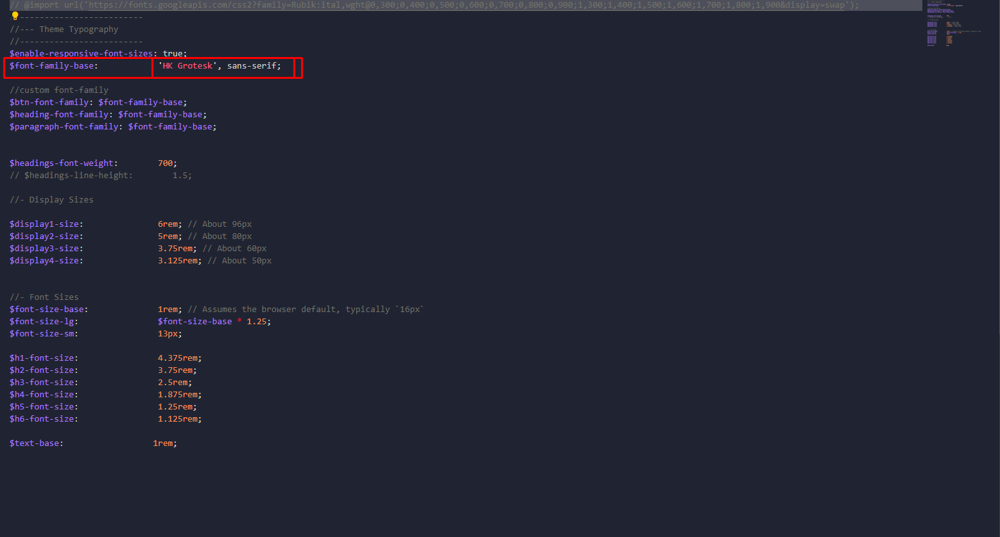

There are several ways to link a font. We have used google font through importing in scss.
To import your google font in SCSS, first open the _fonts.scss in src\styles\scss\bs-customization\ directory.
Then replace the import code at the very top of the file and then replace the value of $font-family-base. Example given below:
